Results
The final setup combines continuous motion parameters with discrete gestures. Continuous parameters shape the behaviour of sound layers, while gestures trigger specific sonic events or states.
Extracted Motion Parameters + Mappings
The system analyses the tracked skeleton and derives a set of relational body parameters. These values describe posture, distance, and movement intensity and are continuously mapped to sound.
| Parameter | Calculation | Sound Influence |
|---|---|---|
| Body Height | head.y − knee.y | Intensity of drone layer |
| Hand ↔ Hand Distance | euclidean distance (handR, handL) | Expands harmonic sound field and panning |
| Hand Motion Speed | slope chop + trigger threshold | Triggers short sample events |
| Foot Motion Speed | slope chop + trigger threshold | Triggers short sample events |
| not used yet: | ||
| Body Speed | slope chop | Deconstruction |
| Head ↔ Hand Distance | euclidean distance (head, handL) | Modulates emotional sound layers |
Body Height → Drone Intensity
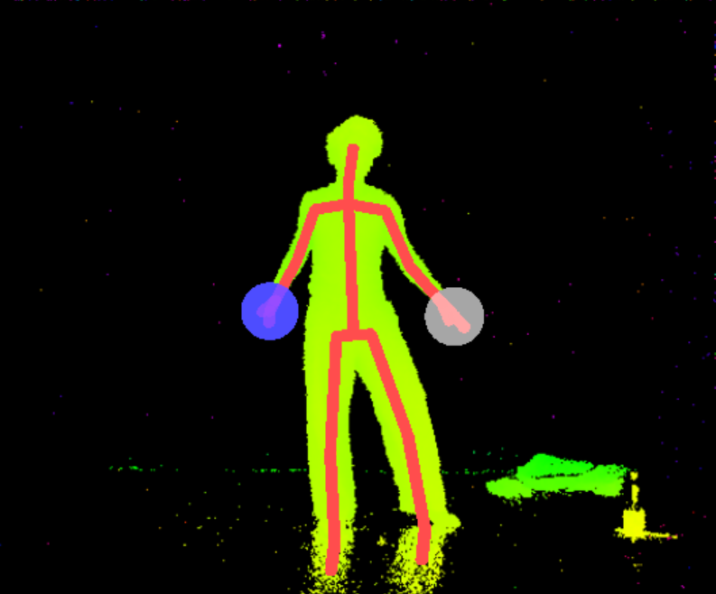
Performer posture
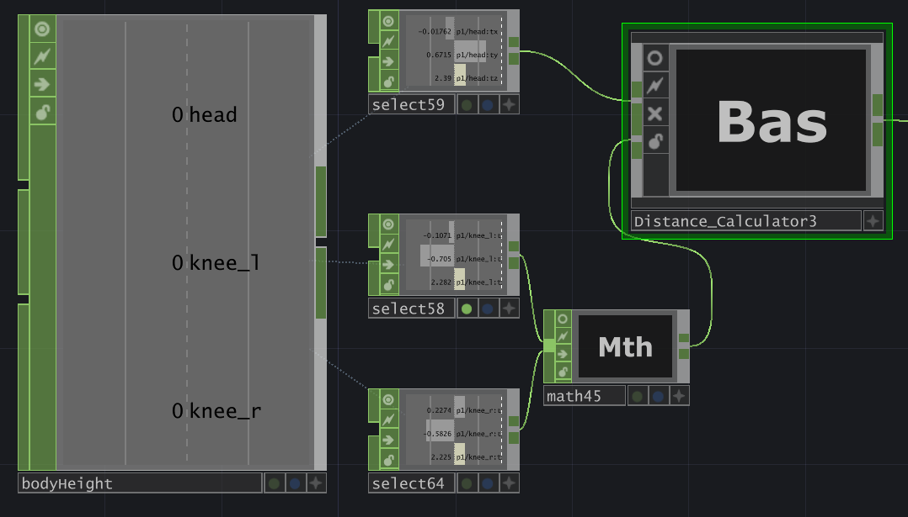
Parameter extraction in TouchDesigner
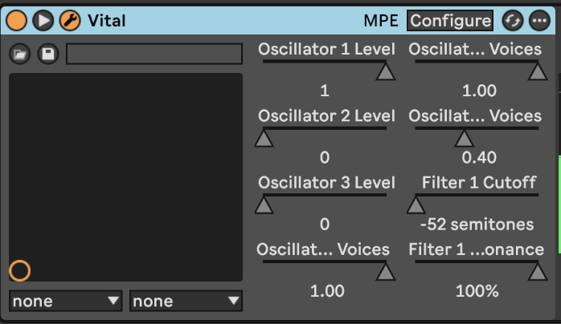
Mapped to vital drone layer in Ableton
Hand ↔ Hand Distance → Harmonic Space
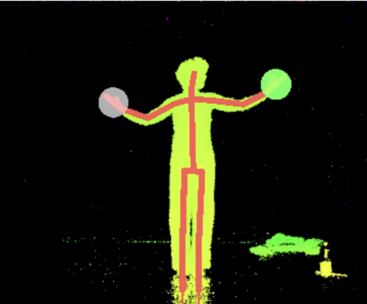
Expanded arm position
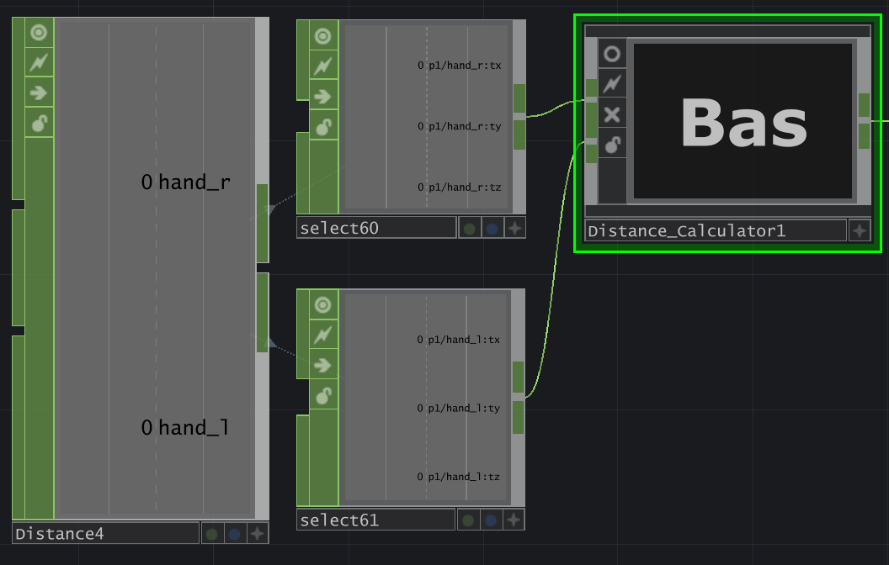
Distance calculation
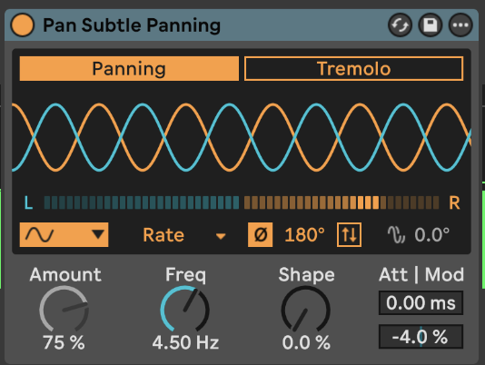
Controls panning
Hands / Feet Speed → Trigger Samples
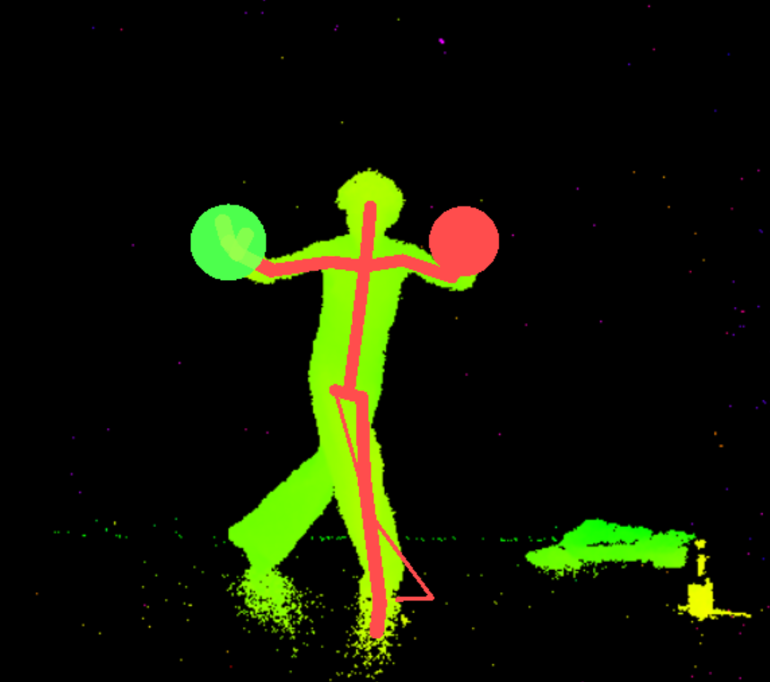
Dynamic movement
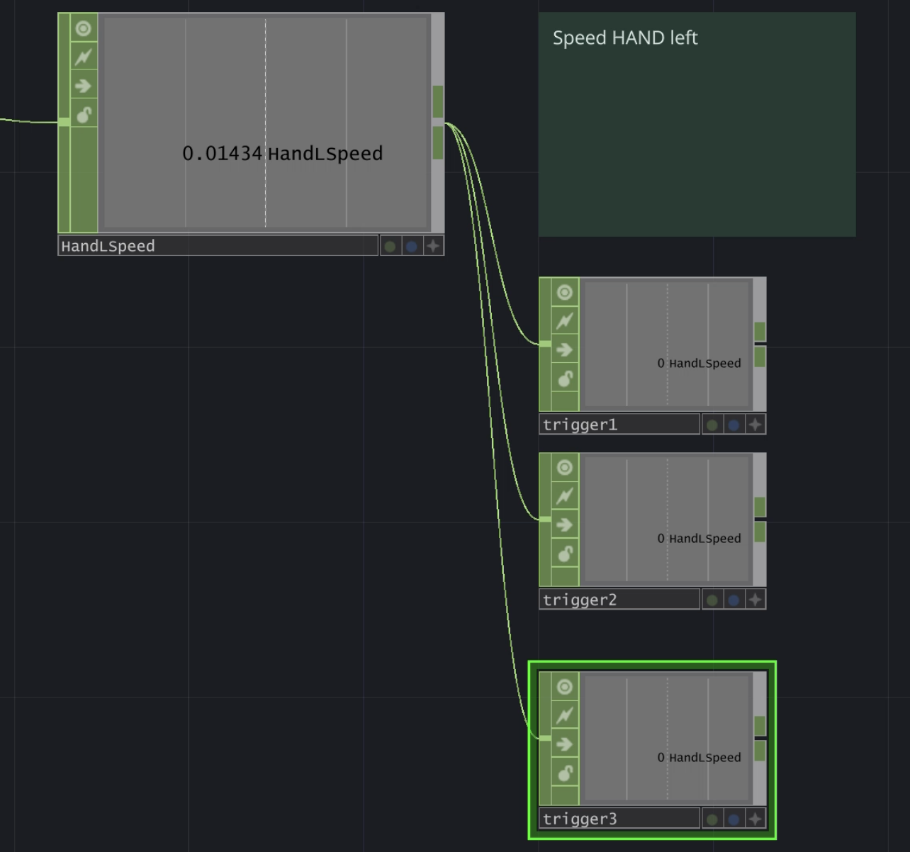
Velocity parameter
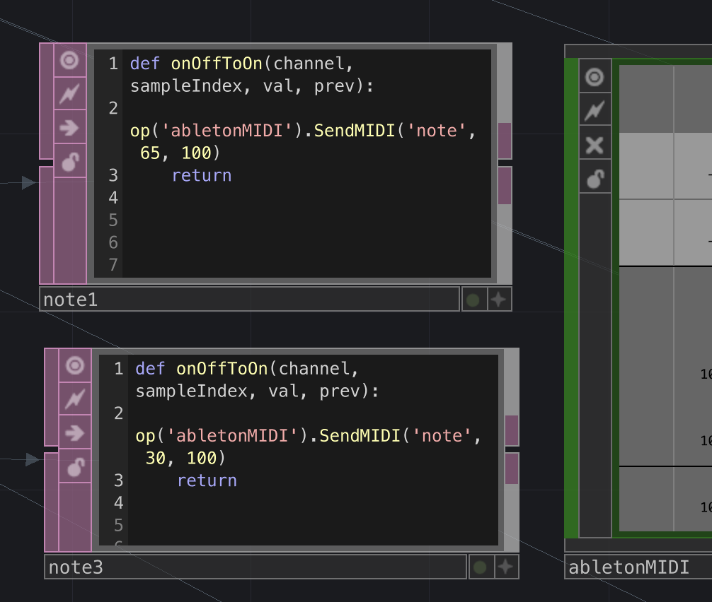
Sends MIDI note to Ableton
Detected Gestures
In addition to continuous motion parameters, the system detects discrete body gestures that activate sonic states or trigger events. Gesture detection is implemented in TouchDesigner using an Execute CHOP script that evaluates relational body values and thresholds in real time.
| Gesture | Detection Principle | System Response |
|---|---|---|
| Hands in Front of Chest | Relative hand position near the chest area | Activates an intimate sonic state |
| Hands Above Head | Both hands positioned above the head | Activates an expanded sonic state |
| not used yet: | ||
| Stillness | Very low body movement over time | Reduces system activity |
| Crouch | Low overall body height | Cancels sounds |
Execute CHOP DAT script:

Gesture detection implemented in an Execute CHOP script in TouchDesigner
A priority system ensures that gestures do not overlap and that only one gesture state is active at a time.
if hands_above_head:
hands_up = True
elif crouch_candidate:
crouch = True
elif hands_on_chest_candidate:
hands_on_chest = TruePriority system for gesture detection
Hands on Chest → Intimate State
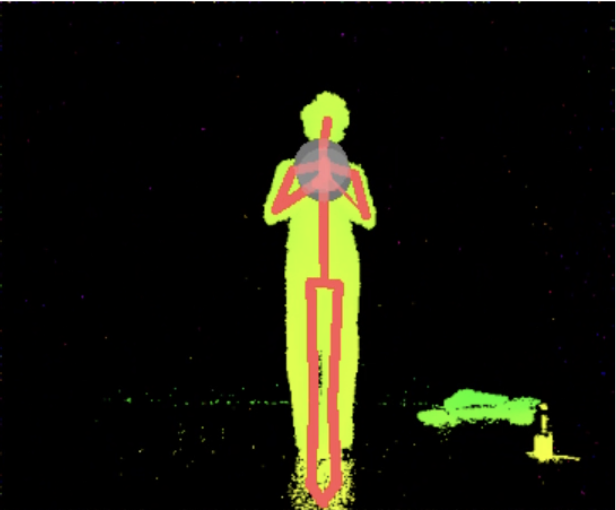
Detected body pose
chest_zone = head_y - chest_offset
hands_on_chest_candidate = (
hands_close and
rhand_close and
lhand_close and
hand_l_y < chest_zone and
hand_r_y < chest_zone
)Gesture detection logic in TouchDesigner
Hands Above Head → Expanded State
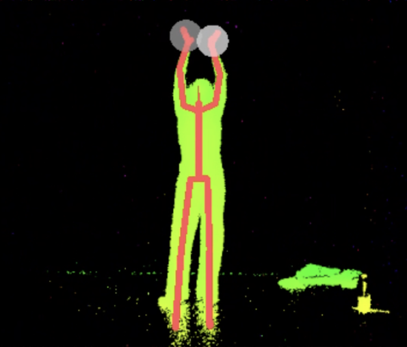
Detected body pose
hands_above_head = (
hand_l_y > head_y + above_offset and
hand_r_y > head_y + above_offset and
hands_together
)Gesture detection logic in TouchDesigner
Layered Sound Design
The sound system inside Ableton Live is structured into several layers that represent different aspects of the body. Each layer reacts to specific motion parameters and gestures.
| Sound Layer | Description | Controlled by |
|---|---|---|
| Heartbeat | Low rhythmic pulse (Vital Synthesizer) | Hands on Chest gesture |
| Breathing | Breathing sound (audio recording) | Hands on Chest gesture |
| Harmonic Drones | Three layered tonal textures creating a spatial sound field (Vital Synthesizer) | Body height and hand distance |
| Triggered Samples | Short sound samples triggered (MIDI Note and Simpler) | Fast hand movement |
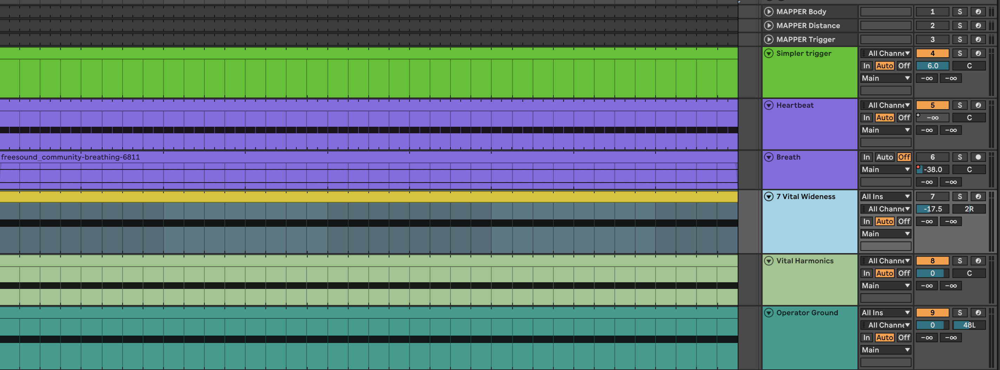
Ableton Sound Layers
Pipeline
The following videos show the real-time pipeline of the system, from motion tracking to data processing and sound generation:
Kinect captures the performer's body as skeleton data.
TouchDesigner processes the motion data in real time.
Parameters are mapped and sent to Ableton Live.
Movement data is translated into layered sound output.